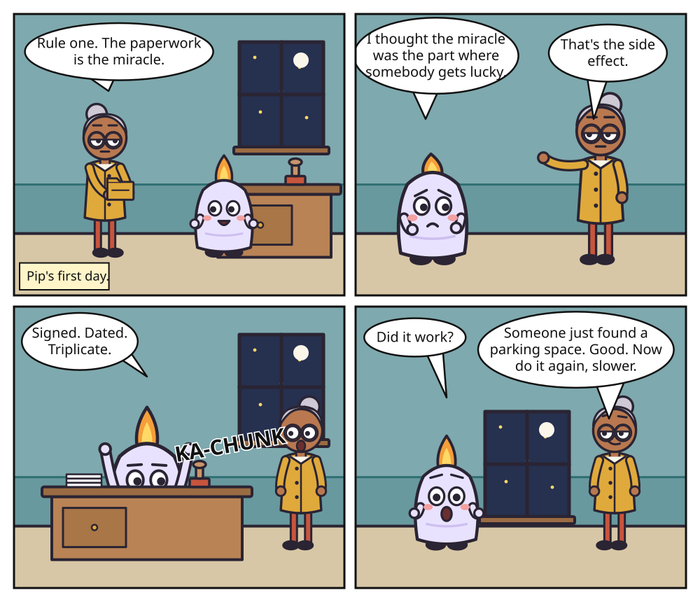

#1 The Paperwork Is the Miracle

Day one. Nobody has said 'welcome' yet; Margo's version is the second rule.
Transcript
- Caption – Pip's first day.
- Panel 1 – MARGO: Rule one. The paperwork is the miracle.
- Panel 2 – PIP: I thought the miracle was the part where somebody gets lucky.
- Panel 2 – MARGO: That's the side effect.
- Panel 3 – PIP: Signed. Dated. Triplicate.
- Panel 3 – SFX: KA-CHUNK
- Panel 4 – PIP: Did it work?
- Panel 4 – MARGO: Someone just found a parking space. Good. Now do it again, slower.